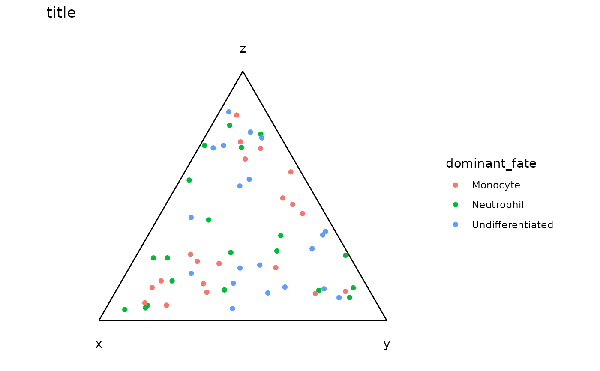

Assemble the per-cell fate-composition table used by the simplex plots
Source:R/compute_entropy.R
compute_entropy.RdTurns a matrix of per-cell fate potentials — one column per candidate
fate (in the paper's LARRY analysis: Monocyte, Neutrophil,
Undifferentiated) — into the data frame that plot_simplex
consumes. Each row is normalized to a composition summing to 1, giving the
cell's position in the simplex, and is then annotated with its current cell
type, its total predicted progeny count, and two lineage-level
quantities computed from what that cell's lineage actually became at the
later time point: the dominant observed fate and the Shannon entropy of the
observed fate distribution.
Usage
compute_entropy(
cell_imputation_mat,
later_timepoint,
seurat_object,
variable_celltype,
variable_lineage,
variable_timepoint,
bool_10_power = TRUE,
bool_jitter = TRUE,
entropy_bump = 0.01,
min_imputation = 0.01,
min_jitter = 0.1
)Arguments
- cell_imputation_mat
A numeric matrix, rows = cells (row names must be cell IDs present in the Seurat object) and columns = candidate fates (column names required, and used as the composition column names of the result). Typically the
cell_imputed_scorevectors from onecyfer_finalize()fit per fate, column-bound.- later_timepoint
The value of
variable_timepointidentifying the future time point whose observed cell types define the dominant fate and entropy.- seurat_object
A Seurat object whose
meta.datasupplies the cell type, lineage, and time point annotations. Must contain every row name ofcell_imputation_mat, and also the later-time-point cells, which are generally not rows ofcell_imputation_mat.- variable_celltype
Name of the
meta.datacolumn holding the cell type annotation.- variable_lineage
Name of the
meta.datacolumn holding the lineage assignment (usually"assigned_lineage").- variable_timepoint
Name of the
meta.datacolumn holding the time point.- bool_10_power
Whether to apply
10^tocell_imputation_matbefore doing anything else. DefaultTRUE, which is correct forcell_imputed_score, since that is on the log10 scale — see the "Scales" section ofcyfer_finalize. Set toFALSEonly if the caller has already exponentiated.- bool_jitter
Whether to add
Uniform(0, min_jitter)noise to each composition before renormalizing. DefaultTRUE. This exists to pull points off the edges and vertices of the simplex, where a cell with a single non-zero fate would otherwise overplot, and it means the function is stochastic: two calls give different coordinates unless the caller sets a seed beforehand. There is noseed_numberargument.- entropy_bump
A constant added to every entropy value at the end. Default
0.01. Purely cosmetic: entropy is mapped to point size, and a lineage with a single observed fate has entropy exactly 0 and would otherwise be drawn invisibly small.- min_imputation
Cells whose row of
cell_imputation_matsums to at most this are dropped, since their composition would be the ratio of two near-zero numbers. Default0.01. Applied afterbool_10_power, so it is a threshold on predicted progeny count, not on the log10 score.- min_jitter
Upper bound of the jitter draw. Default
0.1. Large relative to a composition that sums to 1, so the jitter is a visible perturbation rather than a nudge.
Value
A data frame with one row per surviving cell, row names being cell
IDs. Columns: one numeric column per fate (named as in
colnames(cell_imputation_mat)) holding the normalized, jittered
composition; celltype (factor, the cell's own annotation);
cellsize (numeric, the cell's total predicted progeny count
before normalization); lineage (the cell's lineage);
dominant_fate (factor, the most common observed cell type among that
lineage's cells at later_timepoint, with the literal string
"NA" for lineages having no such cells); and entropy
(numeric, Shannon entropy in bits of that same distribution, plus
entropy_bump; NA for lineages with no later-time-point
cells).
Details
The columns of cell_imputation_mat are separate CYFER fits — one
cyfer_finalize() run per fate — placed side by side. Nothing here
checks that, so the caller is responsible for the columns being on a common
scale.
Note the asymmetry the name does not convey: entropy and
dominant_fate are properties of the lineage, computed from
observed cell types at later_timepoint, so every cell of a lineage
carries the same value. The composition columns are per-cell predictions.
Examples
# One cyfer_finalize() score per candidate fate, column-bound, plus a Seurat
# object carrying cell type, lineage, and time point in its metadata.
set.seed(10)
cell_names <- paste0("cell", 1:60)
fate_names <- c("Monocyte", "Neutrophil", "Undifferentiated")
cell_imputation_mat <- matrix(stats::runif(60 * 3, min = -0.5, max = 1.5),
nrow = 60, ncol = 3,
dimnames = list(cell_names, fate_names))
count_mat <- matrix(stats::rpois(30 * 60, lambda = 3), nrow = 30,
dimnames = list(paste0("gene", 1:30), cell_names))
seurat_object <- suppressWarnings(Seurat::CreateSeuratObject(counts = count_mat))
seurat_object$celltype <- rep(fate_names, length.out = 60)
seurat_object$lineage <- rep(paste0("L", 1:6), length.out = 60)
seurat_object$timepoint <- rep(c("day0", "day7"), each = 30)
res <- compute_entropy(cell_imputation_mat = cell_imputation_mat,
later_timepoint = "day7",
seurat_object = seurat_object,
variable_celltype = "celltype",
variable_lineage = "lineage",
variable_timepoint = "timepoint")
head(res)
#> Monocyte Neutrophil Undifferentiated celltype cellsize lineage
#> cell1 0.70425728 0.1364932 0.15924956 Monocyte 4.159163 L1
#> cell2 0.41716598 0.1793240 0.40351004 Neutrophil 3.305904 L2
#> cell3 0.32992428 0.4474746 0.22260107 Undifferentiated 6.406135 L3
#> cell4 0.54852025 0.1859840 0.26549578 Monocyte 13.936854 L4
#> cell5 0.08248963 0.8249028 0.09260756 Neutrophil 15.971396 L5
#> cell6 0.11981572 0.7883293 0.09185499 Undifferentiated 12.288342 L6
#> dominant_fate entropy
#> cell1 Monocyte 0.01
#> cell2 Neutrophil 0.01
#> cell3 Undifferentiated 0.01
#> cell4 Monocyte 0.01
#> cell5 Neutrophil 0.01
#> cell6 Undifferentiated 0.01
# the composition columns feed plot_simplex()
plot_simplex(df = res, x_col = "Monocyte", y_col = "Neutrophil",
z_col = "Undifferentiated", color_col = "dominant_fate")
